Video
A demonstration of the Voltage Controlled Cassette Organ library for Decent Sampler.
Included formats
- VST3 (macOS)
- AU (macOS)
- Standalone application (macOS)
- Decent Sampler (macOS, Windows and Linux)
The plugin version is currently released for macOS only. Windows and Linux versions are planned. Until then, the Decent Sampler version covers those platforms.
The plugin version
The plugin is a self-contained instrument, available as VST3, AU and Standalone. Samples, graphics and impulse responses are all embedded in the plugin itself, losslessly compressed, so there are no external files to install or locate. Only the samples for the selected preset are loaded into memory, and a fresh instance lets you choose which preset to load before anything is decoded.
The plugin has all the controls and features from the Decent Sampler version, including MIDI learn, the master volume fader with output meter, value readouts for the knobs and full DAW automation. On top of that, the plugin version adds:
- Drift wheels next to the pitch and modulation wheels, adding a subtle random pitch and volume drift to each voice.
- A velocity curve setting in the settings menu.
The Decent Sampler version
This version of Voltage Controlled Cassette Organ is an instrument preset / sample library for Decent Sampler. If you're new to Decent Sampler, I recommend checking out this guide first.
Technical specification
| Sample rate | Bit depth | Channels | Number of files | File size | |
|---|---|---|---|---|---|
| Samples | 48 kHz | 24 bit | 1 (mono) | 1220 | 3.46 GB |
| Impulse responses | 48 kHz | 24 bit | 2 (stereo) | 4 | 3.60 MB |
Instrument presets
To ensure optimal performance and flexibility, the instrument offers three presets: A quite resource-intensive "All Drawbars" preset with 9 drawbars, a lighter "All Drawbars (Lite)" preset, and a "Single Drawbar" preset which conserves resources by playing back fewer samples per key. The "Single Drawbar" preset does however have samples from different drawbars for an extended key range.
All Drawbars
The "All Drawbars" preset plays back 20 different samples per note, resulting in a rich and complex sound. However, it does demand significant system resources, especially when playing big chords.
All Drawbars (Lite)
A lighter variant of the "All Drawbars" preset. It has no "Double track" feature and shares samples between drawbars to reduce the sample count, which lowers the memory use.
Single Drawbar
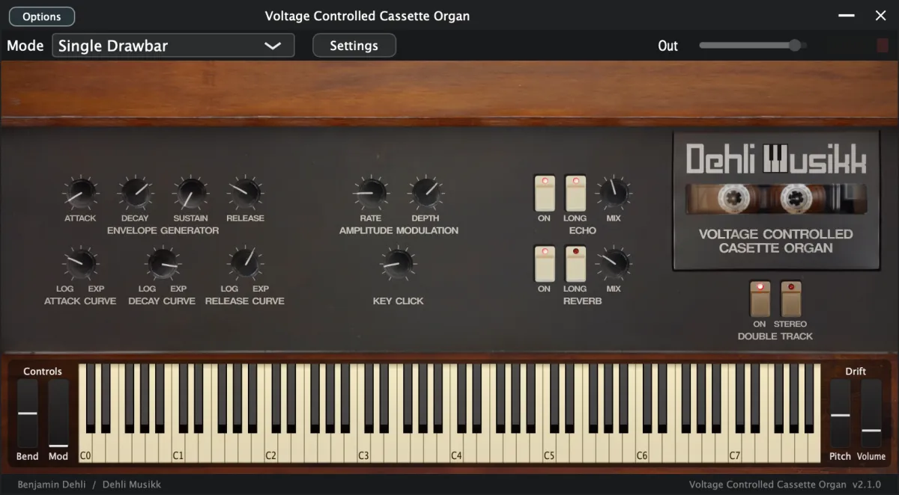
As a more resource-friendly alternative, the "Single Drawbar" preset plays back only four samples per key. This preset also incorporates additional knobs for adjusting the envelope decay curve and release curve, maximizing your creative control.
User Interface
The user interface offers precise control over every aspect of the instrument and effects. Explore parameters to refine your sound, including control over the nine drawbars, key click volume, envelope, amplitude modulation with LFOs, double track, and the immersive effects of echo and reverb.
ADSR Envelope
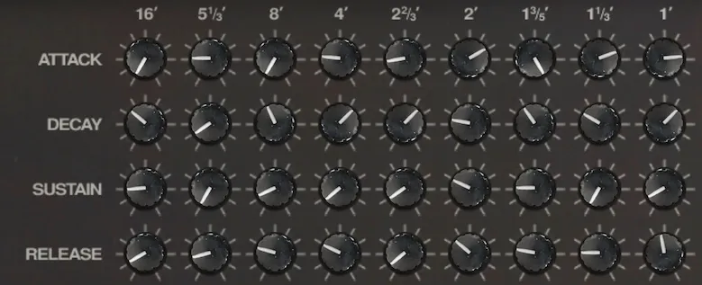
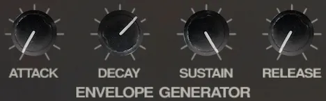
Shape your sound precisely with the Attack, Decay, Sustain, and Release parameters. Whether you desire a punchy, staccato tone or a smooth, lingering ambiance, the ADSR envelope allows you to tailor the dynamics to your liking.
- Attack
- Individual attack time of the amplitude envelope for each drawbar
- Decay
- Individual decay time of the amplitude envelope for each drawbar
- Sustain
- Individual sustain level of the amplitude envelope for each drawbar
- Release
- Individual release time of the amplitude envelope for each drawbar
Envelope curves
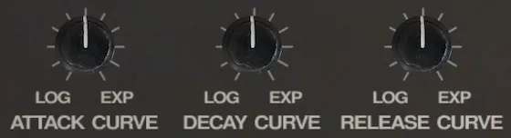
For even more control over the envelope, you can change the curve of the attack time. The "Single Drawbar" preset also incorporates two additional knobs for decay curve and release curve. The decay curve and release curve are exponential for the "All Drawbars" preset.
- Attack curve
- Adjusts the curve of the attack time from logarithmic to exponential with linear in the middle
- Decay curve
- Adjusts the curve of the decay time from logarithmic to exponential with linear in the middle
- Release curve
- Adjusts the curve of the release time from logarithmic to exponential with linear in the middle
LFO
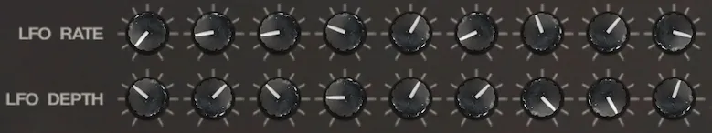
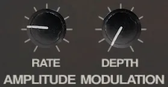
The LFO Rate and LFO Depth knobs enable you to modulate the amplitude of the drawbars with the desired depth and rate using the Low-Frequency Oscillator (LFO), opening up a world of rhythmic possibilities.
- LFO Rate
- LFO rate determines the speed at which the modulation occurs
- LFO Depth
- Adjust the LFO depth to introduce subtle or pronounced variations in volume
Drawbars
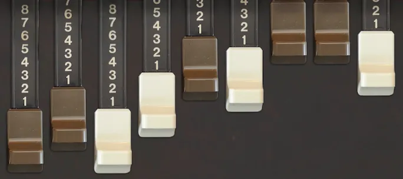
Unleash the power of the nine drawbars to shape your organ's tone with precision. Each drawbar controls the amplitude of a specific harmonic overtone, offering you unparalleled control over the instrument's harmonic richness.
Key click
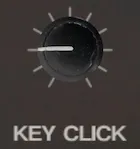
During the early production of Hammond organs, a seemingly unintentional and unwanted occurrence was observed: a distinctive click or pop sound that accompanied the pressing of a key. Initially, this peculiar phenomenon was perceived as a manufacturing flaw or an undesirable artifact of the instrument. Efforts were made to mitigate or eliminate the clicking sound, as it was not part of the intended design.
Musicians discovered that this inadvertent click, which was initially considered a fault, actually contributed a unique and appealing quality to the instrument's overall sound. Rather than viewing it as an unwanted artifact, musicians started to appreciate the click as a distinct characteristic that added depth and character to their performances.
The click's percussive nature, akin to the striking of a mallet on a percussion instrument, provided a lively and vibrant attack to the notes played on the organ.
Double track
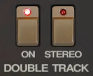
Each sample has been recorded twice and can be mixed together for a "chorus" effect or panned for a stereo effect.
Because of the nature of the tape deck mechanics and the tape itself, the sound will be a bit different for every time it's recorded and played back.
Controls
- On
- Turns on or off the double track samples
- Stereo
- Toggle between both tracks in center (mono) or one track panned left and one track panned right (stereo).
Effects
These effects are achieved using carefully crafted impulse responses. The echo effect employs a Fulltone Tube Tape Echo recorded twice for stereo, while the reverb effect draws from a Chase Bliss Audio & Meris CXM 1978 reverb pedal with a room setting.
Echo
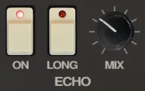
Select from two distinctive echo options: the short echo, delivering a classic slapback effect, and the long echo, characterized by a slower decay and numerous repeats.
- On
- Turns the echo on and off
- Long
- Switches between a short slapback echo and a long echo with slow repeats and high feedback
- Mix
- Mix between direct signal and echo signal
Reverb
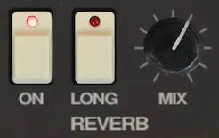
You'll also find two reverb effects: the short reverb, evoking the intimacy of a small room, and the long reverb, enveloping your sound in the vastness of a spacious environment.
- On
- Turns the reverb on and off
- Long
- Switches between a short/small room reverb and a long/big room reverb
- Mix
- Mix between direct signal and reverb signal
Release notes
Version 2.1.02026-08-01
The changes in this release apply to the plugin version only. The DecentSampler version is unchanged.
- Added a translucent overlay graphic on top of the interface.
- Keys that are hovered or held on the keyboard are now shaded in a neutral way instead of turning yellow:
- White keys turn darker.
- Black keys turn brighter.
- The computer keyboard keeps playing notes even while you adjust a control with the mouse.
Version 2.0.02026-07-19
- Added a plugin version. See the section "The plugin version".
- Corrected the UI values for the drawbars, the envelopes, the LFO and the key click amount.
- Fixed the translationOutputMax value for the LFO depth.
- Fixed dead default attributes.
- Effect bindings now use effectIndex, and empty effects elements were removed.
Version 1.3.02025-01-04
- Removed amplitude envelope for one shot samples
Version 1.2.02023-07-05
- Added "All Drawbars (Lite)" preset
- No "Double track" feature
- Shares samples between drawbars to reduce sample count
- Set default decay curve and release curve for "Single Drawbar" preset to exponential
- Minor GUI adjustments
Version 1.1.02023-07-03
- Fix mouse drag direction for drawbars
Version 1.0.02023-06-26
- First version released
About this repository
This repository contains the source for both the Decent Sampler library (the DecentSampler folder) and the plugin version. The plugin is a thin wrapper around the shared Dehli Musikk sampler engine, and a converter translates the Decent Sampler library into the engine's native preset format at build time. The audio files are not part of this repository, since the samples are a paid product. The full version is available from store.dehlimusikk.no.